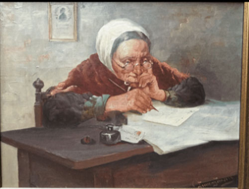

Projekter

Jeg har lavet dette selvpotræt i Adobe Illustrator med pentool
Denne sprite har jeg lavet ved hjælp af Illustrator og css

Ved hjælp af adobe Lightroom classic, har jeg forbedret kontrasten på dette billede, og fået farverne til at komme mere til live
I denne animation, har jeg brugt Adobe animate til at få et gammelt billede "gammel dame der skriver" til at bevæge sig.
Link: shorturl.at/ept12
Dette er en animation jeg selv har tegnet ved brug af adobe animate
Link: shorturl.at/ouBFZ